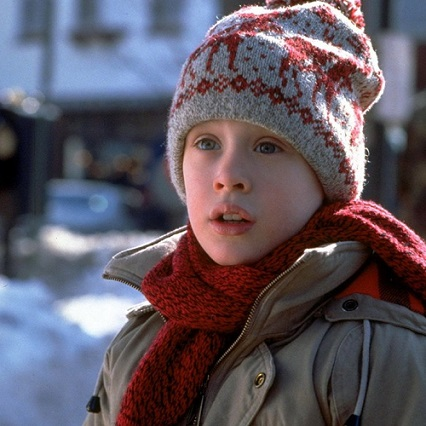
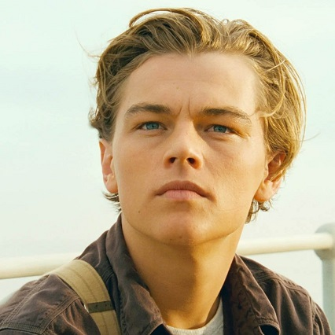
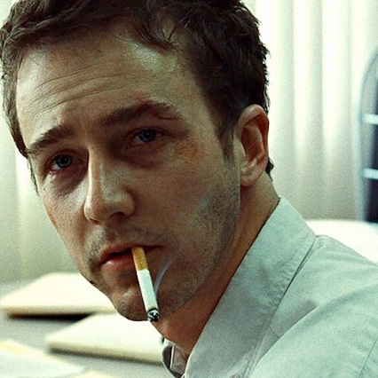
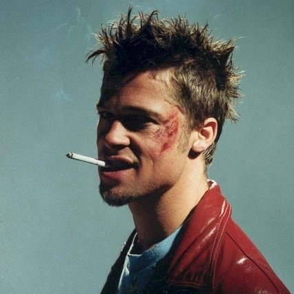
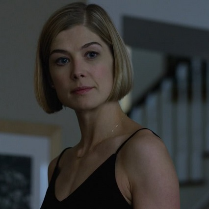

САМЫЕ ИЗВЕСТНЫЕ КИНОГЕРОИ 20th CENTURY FOX
20th Century Studios (Кинообъединение «Студия Двадцатый век») — одна из крупнейших американских киностудий, которая занимается производством телефильмов. В 1935—2020 годах носила название 20th Century Fox (20-й век Фокс).
Компания основана 31 мая 1935 года в результате слияния двух студий: Fox Film Corporation, основанной в 1915 году Уильямом Фоксом, и Twentieth Century Pictures, основанной в 1933 году Дэррилом Ф. Зануком, Джозефом Шенком, Рэймондом Гриффитом и Уильямом Гетцем. За все годы своего существования киностудия подарила нам множество захватывающих историй и ярких киногероев.
И вот некоторые из них:
Кевин Маккаллистер
Джек Доусон
Рассказчик
Тайлер Дёрден
Эми Эллиотт-Данн

КЕВИН МАККАЛИСТЕР
Кевин Маккаллистер — главный герой серии фильмов «Один дома», которые являются одними из самых известных новогодних кинокомедий. Когда ему было восемь лет, семья Маккаллистеров решила на Рождество полететь в Париж. Однако за день до отъезда ссора с родственниками приводит к тому, что он в порыве гнева загадывает желание, чтобы вся его семья исчезла. В утренней суматохе про Кевина забывают, и семья уезжает без него. Проснувшись и осознав, что он остался дома один, мальчик радуется сбывшемуся желанию и обретённой независимости. Однако вскоре его настроение меняется: Кевин обнаруживает угрозу — пару «мокрых бандитов» Гарри и Марва, начавших один за одним взламывать пустующие по округе дома и нацелившихся в итоге на дом Маккаллистеров. Но главный герой хитростью внушает им, что вся семья осталась дома, дабы грабители отложили свои планы. Однако позже его план раскусили. Кевин, осознав, что должен защитить свой дом, начинает подготовку к встрече с грабителями, расставляя в разных местах мини-ловушки. Гарри и Марв пытаются проникнуть в дом, но сталкиваются с сопротивлением Кевина, из-за которого получают различные ушибы и ранения. Пока грабители преследуют Кевина по всему дому, мальчик вызывает полицию. Подоспевшие полицейские арестовывают «мокрых бандитов». На следующее утро в день Рождества, семья Кевина вернулась домой и вновь воссоединилась с младшим сыном.

ДЖЕК ДОУСОН
Джек Доусон — 20-летний нищий художник, который вел бродячий образ жизни. Он не страдал от нищеты. Просто ему нравилось путешествовать и постоянно менять место жительства. Джек был настоящим романтиком и считал, что главное в жизни - свобода. На "Титаник" он попал вместе со своим другом, выиграв билеты на лайнер в карты. Там он впервые встретил Розу, когда та собиралась совершить самоубийство, ведь мать девушки хотела выдать ее замуж за нелюбимого человека. Но Джек смог ее успокоить и отговорить от необдуманного поступка. Став спасителем Розы, Джек был приглашен на обед и представлен элите первого класса. После этого, он сблизился с девушкой и помог ей решиться на освобождение от пут, которые наложили на нее ее семья и общество. В конце концов, Роза порвала со старой жизнью. Она так влюбилась в Джека, что захотела сбежать с ним, бросив высшее общество. Но их счастье было недолгим. "Титаник" столкнулся с айсбергом и стал тонуть. Джеку удалось затащить Розу на плавающий кусок деревянной обшивки, но из-за его узкости поместиться там мог только кто-то один. Он попросил любимую поклясться, что она сделает всё, чтобы выжить, а сам же умер от гипотермии. В итоге Роза выполнила свое обещание, выжила и навсегда сохранила память о том, кто помог ей порвать со своей прошлой жизнью и обрести свободу.

РАССКАЗЧИК
Рассказчик — главный герой романа «Бойцовский клуб» и его экранизации. Нигде в романе не упоминается его настоящее имя. Он работает консультантом по страховым выплатам в компании, занимающейся производством автомобилей. Страдая бессонницей и депрессией, он начинает посещать группы поддержки для людей с заболеваниями, которыми не страдает сам. Это вызывает в нем катарсис, позволяя ему уснуть. Когда самозванка по имени Марла Сингер начинает появляться в группах, его эйфория нарушается, и его бессонница возвращается. Рассказчик нуждается в свободе, он чувствует, что заперт в своём собственном теле, поэтому когда появляется Тайлер Дёрден, он оказывается наделён всеми теми качествами, в которых испытывал нехватку. Вскоре Рассказчик совместно с Тайлером создают подпольный бойцовский клуб, куда приходят люди и избивают друг друга, что представляет собой радикальную психотерапию, но позднее Тайлер реорганизовывает клуб в экстремистскую группу — Project Mayhem. Однако Рассказчику не нравятся действия новосозданной организации, и пытаясь предотвратить масштабный теракт, он осознает, что Тайлер Дёрден — это его альтер-эго. В финальной сцене он борется с голосом в своей голове, после чего выстреливает себе в голову, убивая тем самым Тайлера Дёрдена.

ТАЙЛЕР ДЁРДЕН
Тайлер Дёрден — персонаж романа Чака Паланика «Бойцовский клуб» и снятого по его мотивам одноименного фильма. Тайлер — альтер-эго Рассказчика. Он трактуется как сгусток того слоя психики, который известен в психоанализе как Оно, — с щепоткой Ницше, необходимой для того, чтобы он мог афористично выражать свои взгляды. Дёрден вихрем проносится по герметично запакованной, опрятной жизни главного героя как тонизирующий, подрывной элемент, восстающий против сфабрикованности и посредственности современного быта. В основе его мировоззрения лежит влечение к смерти: «Самосовершенствование не более чем онанизм, самоуничтожение — вот что действительно важно». Тайлер — нонконформист, нигилист и анархо-примитивист, который отвергает потребительскую культуру и основы современного западного общества, такие как наёмное рабство, этим Тайлер противопоставляется главному герою — рассказчику, который является типичным примером потребителя.

ЭМИ ЭЛЛИОТТ-ДАНН
Эми Эллиотт-Данн — супруга Ника Данна, исчезнувшая в годовщину свадьбы при обстоятельствах, похожих на похищение. Полицейские находят целый ряд фактов, которые наводят на подозрения о причастности Ника к пропаже жены. Вот только никто даже не подозревает, что Эми сама инсценировала своё исчезновение, уехала из города, поменяла внешность и поселилась в дешёвом мотеле, из которого внимательно следит за событиями, связанными с ней. Её голос за кадром объясняет мотивацию её поступков. Эми была разочарована браком. Она узнала, что муж изменяет ей со своей студенткой и решила ему отомстить, создав все необходимые улики, чтобы Нику предъявили обвинение в её убийстве и приговорили к смертной казни.